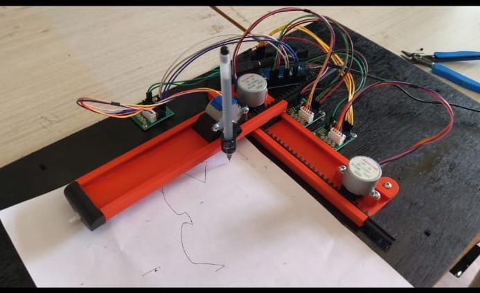

SELECTED PROJECTS
Engineering in practice.
A selection of practical projects exploring automation, robotics, embedded systems, and computer-controlled motion.

Automated Dam Gate Actuation System
Automated control of dam gate operation based on water-level conditions.
View Project →PROJECT IMAGE
TO BE ADDED
02TO BE ADDED
Automated Material Handling Robotic Arm
A robotic system for automated pick, move, and place operations.
View Project →
Computer Numerical Control (CNC) 2D Vector Graphics Plotter
A computer-controlled plotter for converting vector graphics into physical drawings.
View Project →